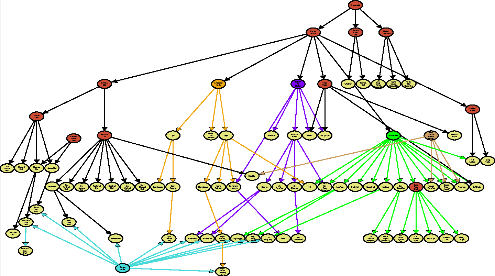

Object Oriented Programming in Matlab: basics
One of Matlab's best kept secrets is its comprehensive support for Object Oriented Programming, (OOP). Entire courses in computer science are devoted to extolling OOPs many virtues and we will not have space to mention them all here. Instead, we focus on the specifics of OOP in Matlab and provide enough detail to start using objects in your own programs and writing your own classes.
We make extensive reference to the online Matlab OO documentation available here: http://www.mathworks.com/access/helpdesk/help/pdf_doc/matlab/matlab_oop.pdf
Contents
- Old vs New Syntax
- Relation to Structs
- Defining a Class
- Properties
- Methods
- Private Methods
- Static Methods
- External Functions & Methods
- Dynamic Dispatch
- Inheritance
- Multiple inheritance
- Visualizing the class hierarchy
- Calling a Superclass Method
- Class Aliases
- Sealed Classes, Methods & Properties
- Abstract Methods & Properties
- Object Arrays
Old vs New Syntax
Mathworks recently (as of version 2008a) introduced an entirely new OO framework and syntax, bringing it more in line with Java, python, C++, etc. However, the old style is still supported. This tutorial discusses both in some depth. Topics relating only to the old style are discussed separately. They can be safely skipped by anyone solely interested in the new design.
Relation to Structs
At a first approximation, objects in Matlab are just structs. Here are some important differences, which we will elaborate on in due course.
- Both structs and objects store data in named fields, (called properties in objects) but objects also encapsulate the operations you can perform on them, (called methods).
- Structs can be created with whatever fields you like but all objects of the same class have the same properties. The values for these properties will differ.
- Structs are created with the struct() function, objects use constructors (to be explained below).
Recall that structs are created by specifying field names and data to be stored in these fields. Objects also have fields that store data, called properties, which operate in a very similar way. However, unlike structs, we must predefine what properties we want an entire class of objects to have, and we do so by writing a class definition. While objects of the same class will have the same set of properties, the values of these properties will differ just as two different structs might have the same field names and yet store different data.
So far we could imagine achieving the same effect by creating, say, an array of structs all with the same fields. However, there are further differences.
Objects, unlike structs, also encapsulate the operations we want to perform on the data, called methods.
Suppose for instance that we want to use and manipulate calendar dates in our program. We could create structs with minute, hour, day, month, and year fields and store all of the information about specific dates and times in these. This would certainly be better than having separate variables for all of these values floating around unstructured. However, there are also a number of operations we might want to perform on these dates, such as incrementing them by a day, comparing them, subtracting them, etc. We could write stand alone functions to perform all of these operations, but it would be nice to organize them together too, just as we did the data. This is precisely what an object oriented approach lets us do.
There are further differences and advantages, which we will come to in due course. We first describe how to write a class definition.
Defining a Class
If you are new to OOP, make sure you mark the distinction between classes and instances of that class, called objects. This distinction will hopefully become clearer as we see more examples. In the class definition, we create a kind of prototype, or specification for the construction of a objects of a certain class or type. From one class definition, we create many instances.
To begin, create a new m-file with the same name as the class you want to create and start the file with the classdef keyword followed by the class name. Properties and methods are defined and written below this line in designated blocks as shown below. We must include a special method, called the constructor , which is responsible for constructing new objects and it must have the same name as the class. The constructor can take any number of arguments specifying initial values for the properties for instance, and must return one argument, the constructed object. Properties can optionally be assigned default values as with the minute property below. If no default is specified and no value is assigned by the constructor, they are assigned the empty matrix, [].
Below we create a class called mydate which can perform various operations to do with calendaring. The full class definition is available here, but is rather complex. We will build it up piece by piece during this chapter. We start with the constructor, called mydate, and a simple method, called rollDay.
classdef mydate % write a description of the class here.
properties
% define the properties of the class here, (like fields of a struct)
minute = 0;
hour;
day;
month;
year;
end methods
% methods, including the constructor are defined in this block function obj = mydate(minute,hour,day,month,year)
% class constructor
if(nargin > 0)
obj.minute = minute;
obj.hour = hour;
obj.day = day;
obj.month = month;
obj.year = year;
end
endfunction obj = rollDay(obj,numdays)
obj.day = obj.day + numdays;
endend end
Our date constructor, could have been as simple as the following.
function obj = mydate()
obj;
endMatlab does all of the real work of creating the object, we just have to ensure that we write a constructor by the right name and perform any desired initialization, returning a declared variable.
Now that we have written the class, we can create date objects by simply calling the constructor.
d1 = mydate(0,3,27,2,1998); % Create a new mydate object
It is usually good practice to write a constructor so we can optionally create objects without having to specify any parameters. As we have written the mydate class, we could create a mydate object like this as well:
d2 = mydate(); % create a new mydate object
However, none of the properties, (except for minute) will be set. (They will all be equal to []).
Note that if you change a class definition file, you have to type clear classes to force matlab to load the new version. Just typing clear all does not work.
Properties
The properties defined above are, in java lingo, public, that is, accessible from outside the class just like fields of a struct. We can access and assign them using dot notation.
day = d1.day; % access the day property d1.year = 2008; % set the year property
It is usually a good idea, however, to restrict direct access to properties to maintain a separation between implementation and interface. That is, we want clients to be able to use our class without having to know about the details of implementation and we will want the freedom to change how we store properties, for instance, without affecting clients already using our class. Perhaps at a later point, for example, we want the freedom to only calculate the value of a property when the user asks for it, (so called lazy evaluation). Without a level of indirection, this would not be possible. The idea is then to provide access to properties but only through methods. We will discuss such methods, so called getters and setters shortly.
Matlab offers quite a lot of control over property access. There are three levels, private , protected , and public and these apply separately to read and write access. Private properties are only accessible from methods of the class, and public properties, (the default) are accessible anywhere. Protected properties are private properties that are also accessible from subclasses. We will discuss subclasses and Inheritance later in this tutorial.
To mark a group of properties as say private, we modify the attributes of a property block. We saw one such property block above, however, we can create as many as we like all with different access rights so that some properties can be public and others private for example. We specify these access rights by assigning the GetAccess and SetAccess attributes the strings 'public', 'private', or 'protected' as in the examples below.
properties(GetAccess = 'public', SetAccess = 'private')
% public read access, but private write access.
end properties(GetAccess = 'private', SetAccess = 'private')
% private read and write access
end
There are other property attributes we can assign although they are rarely of use with the exception of 'Constant' and perhaps 'Hidden'. We can specify that a block of properties are constant and thus cannot be changed anywhere as follows:
properties(Constant = true)
DAYS_PER_YEAR = 365;
MONTHS_PER_YEAR = 12;
WEEKS_PER_YEAR = 52;
end
Hidden properties do not show up when displaying the object. For information on additional attributes see section 6.7 of the Mathworks OO documentation. Method attributes, which we discuss shortly, are listed in section 7.4 and class attributes in section 3.5.
We can view all of the (non-hidden) properties of a class using the properties() command.
properties(mydate)
Properties for class mydate:
minute
hour
day
month
year
numsecs
valid
DAYS_PER_YEAR
MONTHS_PER_YEAR
WEEKS_PER_YEAR
Methods
Methods in OOP, as we mentioned, are functions, defined in a class, that operate specifically on objects of that class, (although they can certainly take objects of other classes as additional arguments). Observe the simple function, rollDay() , which we have already defined. This method adds a specified number of days to the day property. Notice that the first argument of the function definition is an object of the containing class.
There are two equivalent ways of calling methods, both shown here.
d1 = rollDay(d,3); d1 = d.rollDay(3);
The second option is probably more familiar to java and C++ programmers. It is essentially translated into the first by placing the implicit parameter, (the object d) as the first input into rollDay. Note, the method takes 2 parameters in both cases, (i.e. nargin() will return 2 in each). There is really no particular reason to choose one over the other except perhaps that the second makes it clearer that the function is actually a method applied to object d. Pick one style and be consistent throughout your program.
We must take care to return the object when we modify any properties. Objects in Matlab are by default, passed by value not by reference, which means that a full copy of the object is passed to methods and it is this copy that is modified. If we do not pass back this copy, effectively overwriting the original, we will not observe any change in the state. We can optionally write classes whose objects are passed by reference, which we discuss in the Handle Superclass section. This point also applies to calls like d3 = d2. If d2 is the mydate object we created above, d3 will be an identical copy.
Private Methods
Methods, just like properties, can be private, protected, or public, (the default). Private methods are helper functions that are not intended to be part of the class interface or to be used outside the of the class methods. It is often useful, for instance, to break public methods down into a series of calls to private methods, (this is called functional decomposition). Protected methods, like protected properties, are private except also accessible by subclasses.
We define access to a block of methods, by assigning the string 'private', 'protected', or 'public', to the Access attribute of the methods block. We are free to create as many methods blocks as we like each with different access attributes.
methods(Access = private)
function sec = calcSecs(obj)
sec = obj.minute*60 + obj.hour*60*60 + obj.day*24*60*60;
end function TF = isValid(obj)
TF = obj.minute >= 0 && obj.minute <= 60;
end
end
Static Methods
Static methods are methods that are associated with a class as opposed to instances of that class and are defined, as you would expect, in a method block that looks like this:
methods(Static = true)
function printCurrentDate()
display(datestr(now));
end
end
They are useful when you have methods are are thematically related to the class but which do not use any information particular to specific instances of that class. Methods that demo class functionality are also good candidates.
To call a static method, you specify the classname, followed by a dot and the static method name.
mydate.printCurrentDate()
16-Jul-2010 00:14:25
Methods can also be hidden with methods(Hidden = true) hiding them from functions that display class methods such as methods() or methodsview() . We will discuss abstract and sealed methods after first introducing inheritance.
External Functions & Methods
Our class methods are free to call out to any external function on the Matlab path to perform interim calculations. Moreover, if we save our classdef m-file in a directory with the same name as the class but preceded by the @ symbol,(e.g. @mydate), we can write methods in their own files, store them here, and use them as we would any other method. The declaration looks just like the function declarations above and the file name is the same as the function name.
However, we cannot assign such methods any of the method attributes just discussed, (like static, hidden, or protected), they are automatically public.
To write external private methods, save them into a subdirectory called private, e.g. \@mydate\private\myMethod.m.
The alternative is to put everything in one file: the classdef, and any other 'local' functions can come at the end. Such functions will not be visible outside of the classdef file.
Dynamic Dispatch
A big advantage of OOP is that we can create two different classes each with the same method names and Matlab will automatically call the correct method depending on the type of of the object passed. For example, a call like plot(obj) will call foo.plot(obj) if obj is of type foo, and bar.plot(obj) if obj is of type bar.
This allows us to create multiple implementations of the same functionality, all with the same interface (same function names). Then code that uses these objects does not need to be aware of which version of the class is being used.
Inheritance
When writing classes, we often find that some types are really special cases of others. For instance, integers are really special cases of numbers in general. This is different than the class-object relation, such as the number 3 being a specific instance of the integer class or the Earth being a specific instance of the planet class. Planets, however, are a subclass of say celestial bodies.
Inheritance in OOP allows us to write subclasses that inherit all of the properties and methods of their superclass so that we do not have to recode all of the parent functionality. The subclass then extends or specializes this functionality.
We can think of the methods of a subclass as the union of all of its own methods with the methods of its parent superclass, and similarly for properties.
Subclasses can redefine methods inherited from parents by simply specifying a method by the same name, (the number & names of arguments do not have to be the same). The subclass version is used with objects of that class, while the superclass version is used with supeclass objects - another example of dynamic dispatch.
If you find yourself writing the same methods in two or more classes, consider creating an inheritance hierarchy in which the superclass contains the code common to all of the subclasses. This hierarchy can be as many levels deep as you like.
Be aware that classes written in the new syntax cannot inherit from those written in the old, and vice versa.
You can also subclass built in types like double.
We can specify a superclass for a class we are writing by using the following syntax in the classdef statement of our class definition.
classdef classname < superclass
Multiple inheritance
Matlab supports multiple inheritance, i.e. subclasses with multiple superclasses. Care must be taken that naming conflicts do not occur. See section 5.11 of the Matlab OO documentation for details on multiple inheritance conflict resolution. To inherit from multiple classes, separate the superclasses with the & symbol as in the following.
classdef classname < super1 & super2 & super3
Visualizing the class hierarchy
Matt Dunham's viewClassTree function displays a class hierarchy starting at a given class. It relies on the graphlayout class, and makes extensive use of metaclasses. An example of what the output looks like, when run on the ProbModel class from PMTK, is shown below.

Calling a Superclass Method
When a method has been redefined in a subclass, it is sometimes necessary to call the superclass version from the subclass. Sometimes, for example, you want the subclass version to do everything the superclass version does, and more. Rather than copy the code from the superclass, you can first call the superclass version and then execute further code.
To access superclass methods and properties use the @ operator as in
methodname@superclassname(input1,input2)
While it will not produce an error, it is not necessary to use the @ operator to access inherited methods or properties that have not been redefined. You can access them in the same way as you would a method or property written in the subclass.
Class Aliases
We can create multiple names for the same class with empty classdef declarations.
classdef newclassname < oldclassname end
Sealed Classes, Methods & Properties
A sealed class cannot be subclassed and a sealed method or property cannot be redefined in a subclass. This is similar to Java's final keyword. Classes are defined as sealed in the classdef statement and methods and properties are sealed by modifying the methods or properties block attribute.
classdef(Sealed = true) myclass methods(Sealed = true) properties(Sealed = true)
Abstract Methods & Properties
Abstract methods, simply put, are methods that have a function header, but not a function body, (i.e. no implementation). They are used to define a common interface for all current and future subclasses. Abstract methods must be implemented by subclasses and as such their inclusion in a superclass acts as a kind of contract, enforcing interface consistency. Of course, if the implementations in all of the subclasses are going to be the same, we are better off writing a regular method in the superclass, which will be inherited by all subclasses. Abstract methods are useful when we know subclasses need to have a particular method but each subclass implementation will be slightly different.
Lets suppose we have a shape superclass with many subclasses like sphere, cube, elipsoid, pyramid, etc. We want every subclass (and future subclasses other people might dream up) to have a calculateVolume() method. The calculation will be different in each case but by creating a calculateVolume() abstract method in the shape superclass, we can rely on the fact that each subclass will have such a method. We can then write other classes or functions that depend on this fact and do not have to rewrite any code when new shape subclasses are created.
Properties can also be abstract but are of less use - they too have to be defined in subclasses.
A class with one or more abstract methods or properties is considered abstract itself and instances cannot be created from it. Any subclass that does not implement every one of the abstract methods and properties of its superclasses will itself be abstract, essentially delegating the implementation of some or all of them to further subclasses.
We define a block of methods as abstract with the Abstract attribute, and when writing the methods, we do not include a body.
methods(Abstract = true)
function vol = calculateVolume(obj,units);
function area = calculateSurfaceArea(obj,units);
function obj = doubleSize(obj);
endObject Arrays
Objects of the same class can be stored together in object arrays that operate just like numeric arrays. We can concatenate objects together and index into these arrays in the usual way.
d2 = mydate(1,4,22,3,2008); % create another mydate dates = [d1 d2]; % we can concatenate objects just like numbers [nrows ncols] = size(dates) % and use other familiar functions d1 = dates(1,1); % retrieve the first entry dates(1,1) = d1; % assign the first entry
nrows =
1
ncols =
2
The type of a single mydate object is actually an object array of mydate objects, albeit of size 1-by-1. Just about everything in Matlab is an array of some sort and objects are no exception. This is quite unlike java for instance, which distinguishes in terms of class, between an object of type A and a collection of objects of type A. One consequence of this is that method calls involving an array of objects dispatch the same method as would be were only one object involved; this includes calls to subsref() and subsasgn() .
We can also store objects of multiple types in cells and structs.